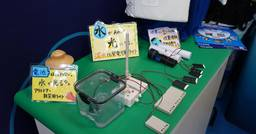
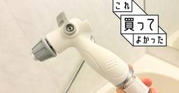
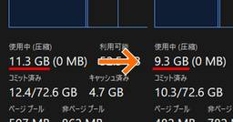
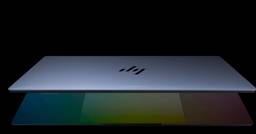
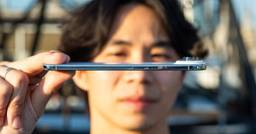
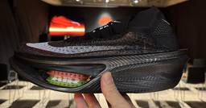

ギズモード・ジャパン
https://www.gizmodo.jp
日本最大のテクノロジー＆ガジェット専門メディア。YouTubeや記事を通じて、最新ガジェットの偏愛レビューから、AI／サイエンスの深掘りコンテンツまで幅広く発信しています。「みんなで探求する」を合言葉に、刺激的な未来の体験をシェアします。
フィード
iPhone Duoで注目度アップの折りたたみスマホ。僕が横開きを選ばない理由
ギズモード・ジャパン
折りたたみはコンパクトさを重視。iPhone Duoが発売され注目度が上昇中の折りたたみスマホですが、製品発表の映像を見て思ったのが「折りたたむなら、もっと小さくなってほしい」ということでした。開くとタブレットのように使える横開きのメリット…
3時間前
ニューカラーにニューイヤホン。秋はJBLが豊作の季節なんです
ギズモード・ジャパン
グリーン、良いッ！先日、JBLから新しいワイヤレススピーカー「JBL COVE」が発表されました。ストリーミング派にはかなり嬉しい、そして音も良い、贅沢な時間が味わえるスピーカーに仕上がっていましたよ。と同時に、多くの新製品が同じタイミング…
3時間前
スーッと通せばムラなくストレートに。パナソニックから、朝の支度が変わるヘアアイロン登場
ギズモード・ジャパン
パナソニックの新ヘアアイロン「ストレートアイロン ナノケア」を体験。3Dスムースプレートと高浸透ナノイーで、バタバタする朝もコツいらずでムラのないサラサラなストレートヘアがスピーディーに完成します。
4時間前
読むだけじゃない。使い方が広がる、話題の「電子ペーパーガジェット」 1
1
ギズモード・ジャパン
読むだけでなく書く・仕事に使うなど用途が広がる、話題の電子ペーパーガジェット3選を紹介します。目に優しく便利な最新端末の魅力とは。
5時間前
映画『マインクラフト』の大ヒットに続け。Xboxが映画・ドラマを手掛ける新部門「XP」を設立
ギズモード・ジャパン
Xboxが映画やドラマ、関連グッズなど、ゲーム以外のエンターテインメント事業を統合する新部門「XP」の設立を発表しました。映画『マインクラフト／ザ・ムービー』の大ヒットも記憶に新しいところですが、Xboxはゲームの枠を越えたエンターテインメ…
5時間前
オフロード車の子ども。125ccのミニトラックでアウトドアに繰り出せ
ギズモード・ジャパン
こう見えて中身はゴーカートだって。たとえばファミコンなどのゲーム機がミニサイズになったり、掃除機がハンデイーになったりPCが弁当箱状になったり、大きかったデバイスが小型化しても実用的なのは魅力がありますよね。乗り物も同じで、モンキーのような…
6時間前

水や空気を使って発電。防災を変えてくれそうな変わり電池たち
ギズモード・ジャパン
水や空気に触れるまで放電せず半永久保存できる「紙電池」と「空気電池」をご紹介。防災の常識を変える次世代バッテリーの魅力や活用法を解説します。
6時間前
Amazonのちいかわキッズタブレット、大きいお友達も大興奮。Playストア対応だ！
ギズモード・ジャパン
Amazonの新ブランドタブレット「ちいかわキッズタブレット」をレビュー。Google Play対応で大人が大興奮の理由やスペックを解説。
8時間前

見て見ぬ振りしていた汚れまで。お風呂掃除が楽しくなる高水圧ガン
ギズモード・ジャパン
見て見ぬふりしていたお風呂の汚れがスッキリ！電源不要のアイメディア高水圧ガンで、面倒な掃除が楽しくなる秘密をご紹介します。
8時間前
【機能別9モデル】米ギズモードが選ぶ、2026年ベスト・ワイヤレスイヤホン
ギズモード・ジャパン
今年も残すところ3ヶ月弱。じわじわと年末のことが頭をよぎってきました。クリスマス、おせち、今年はどうする？クリスマスプレゼントやお正月の過ごし方など、これから考えなちゃいけないことは山ほどありますが、ガジェット好きが今考えるのは、今年のベス…
11時間前
Amazon Prime Videoの広告を追加課金なしでカットする方法
ギズモード・ジャパン
Amazon Prime Videoの広告を追加課金なしでカットする裏技を紹介。スマホやタブレットでの事前ダウンロードを活用して、広告なしで動画を楽しむ方法を分かりやすく解説します。
11時間前

【朗報】Windows、最新アプデで「起動時消費メモリ」ダイエット成功
ギズモード・ジャパン
あゝ、こんなにも嬉しいWindows Updateは初めてです。メモリの価格高騰が続いている今日このごろですが、マイクロソフトがやってくれました。記事執筆時点で最新アップデートとなるWindows 11 26H2において、起動時の消費メモリ…
15時間前
スマホ全盛期のいま、ガラケーの時代がまたやってくるかも？ 1
ギズモード・ジャパン
スマホ疲れやスクロール中毒から脱却したい方へ。現代の便利さを残しつつ、最低限の機能に絞った折りたたみ型の新端末「Light Flip」の魅力をご紹介します。
1日前
Apple、10月13日に新製品発表イベントを予告。スマートホームがやってくる
ギズモード・ジャパン
まだまだ祭りは終わらない！iPhone 18 Pro、AirPods 5、Apple Watch Series 12、Ultra 4などなど、新製品が目白押しのAppleから、さらなるイベント開催のお知らせです。Appleは現地時間の10月…
1日前

スマホの続き、PCでどうぞ。グーグルの新PC「Googlebook」でできること
ギズモード・ジャパン
Googleの新PC「Googlebook」の強みやスマホ連携、Gemini活用法を解説。スマホとPCの連携で作業効率を上げる魅力をご紹介します。
1日前

iPhone Air 2は初代よりさらに薄くなるらしいぞ
ギズモード・ジャパン
Apple史上最薄のiPhoneになる？つい先日、韓国のブロガーyeux1122氏が「iPhone Air 2の厚さは約5.2mm」になると情報発信しました。ということは、初代iPhone Airより0.4mm薄くなり、さらに折りたたみ式の…
1日前
DS？ いいえ、Androidです。約3万5000円の二画面ゲーム機が登場 1
ギズモード・ジャパン
パカッと開けば、画面がふたつ。ニンテンドーDSを思い出した人もいるのでは？こちらは中国のRetroid（レトロイド）「Pocket Duo Lite Plus」。懐かしい姿をしていますが、中身はAndroidの携帯ゲーム機です。このLite…
1日前
階段も登るし、ドアも閉める。カワサキの4脚ロボ「Home LEO」ができる子すぎる
2
ギズモード・ジャパン
人が乗せて、飛んで走れる4脚歩行型オフロードパーソナルモビリティ「CORLEO」で脚光を浴びたカワサキこと川崎重工。ロボット事業に、新たな動きが出ました。今回発表された「Home LEO」は、ヘルスケア分野のソーシャルロボット。家に住むおじ…
1日前
自分の色で読書しよう。着せ替えできる電子書籍リーダー「PocketBook Verta」
ギズモード・ジャパン
新作も発表したばかりのAmazon Kindleシリーズが依然として幅を利かせる電子書籍リーダー市場ですが、楽天koboやOnyx、Barnes & Nobleなど、さまざまなメーカーも電子書籍リーダーを販売しています。Amazonのエコシ…
1日前

はたして「ナイキは終わったのか？」外野のノイズを吹き飛ばすスーパーシューズが登場
ギズモード・ジャパン
近ごろ「ナイキが昔ほどの元気がない」なんて話をよく耳にします。売上や株価がどうこうといったニュースもちらほらと聞こえてきますが、正直なところ、僕らギア好きにはそんな噂はどうでもいい話。この圧倒的な新作シューズを見せつけられたら、そんな雑音は…
1日前